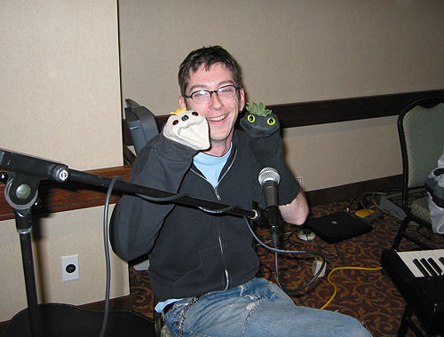

Stars of the show
Finally, Liam brought out the real stars of the show, Sifl & Olly. You should have seen all the flashes going off.
Liam says that even though he does the voice of Olly, Sifl will always be his favorite puppet. He also wonders why nobody ever questions that Olly has a dog nose.
Liam likes to think of the white and black socks from each pair that were left behind in the drawer: "you were so close, baby!"

